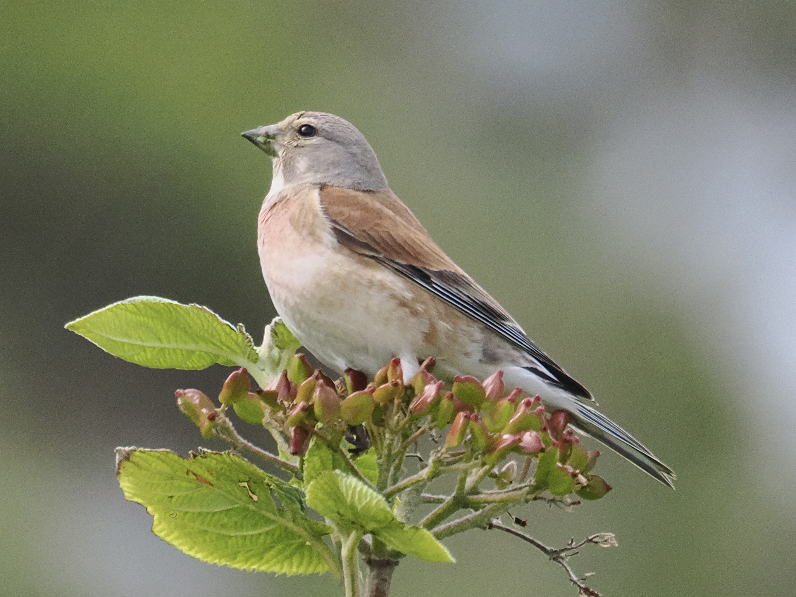
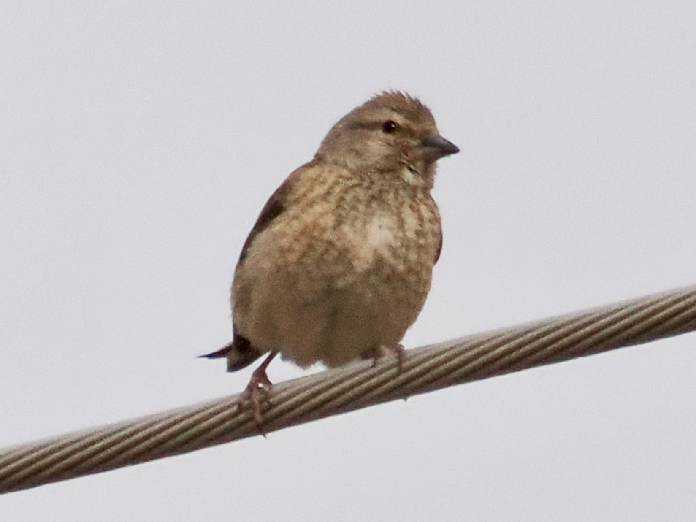

Eurasian Linnet
Linaria cannabina
Order: Passeriformes
Family: Fringillidae

A brown, inconspicuous finch with white eye crescents. Found in open country and farmlands. Male has more red on the head and breast.

Female is overall brown.